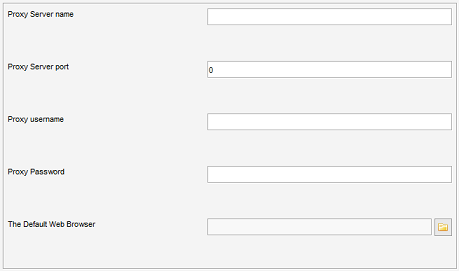

HTTP Settings
Menu path: Settings > Settings > HTTP Settings
If you are not behind a proxy and / or you have no problems using the online search you can stay away from these settings.
In case you are behind a proxy you configure it here.

Proxy Server name
The name of the proxy server must be specified when you are behind a proxy server.
Proxy Server port
If you are behind a proxy server, you must specify the proxy server port number. By default, the port number is set to 0 (no proxy). Most proxy servers will be set to port "8088"
Proxy username
If needed, input the username needed for the entered proxy server
Proxy password
Enter the password belonging to the given username
Browser path
Specify the browser which should be used by Data Crow when opening hyperlinks.
By default Data Crow will try and find the default browser for the current environment. This however can fail causing URLs not to be opened in your browser. To fix this, specify your specific browser here.